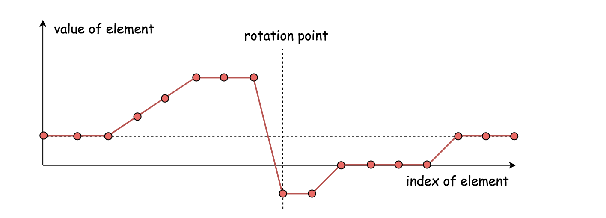
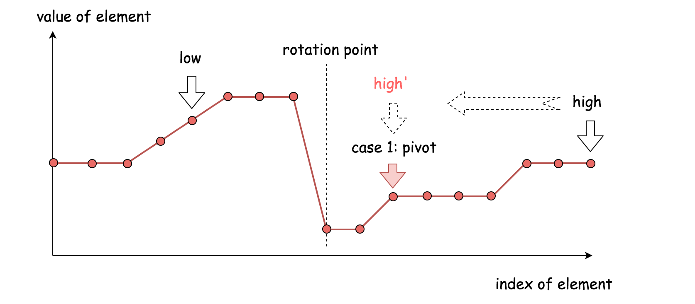
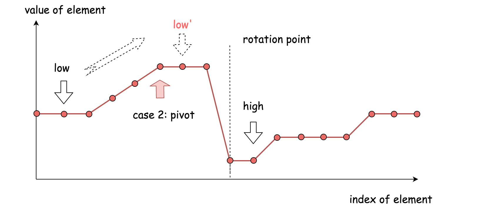
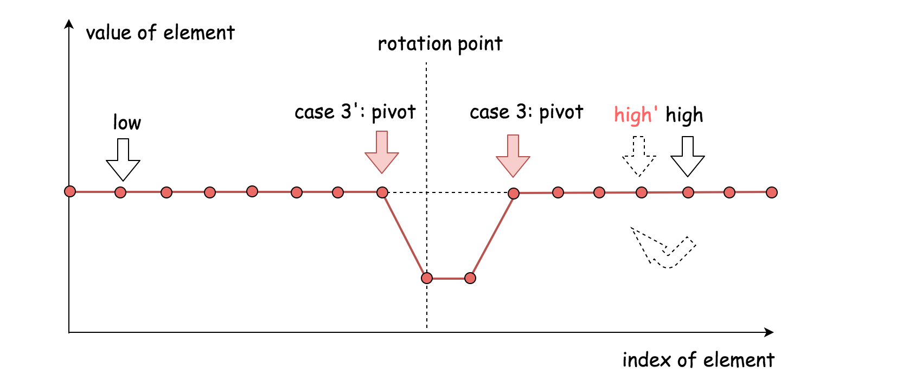

Suppose an array sorted in ascending order is rotated at some pivot unknown to you beforehand.
(i.e., [0,1,2,4,5,6,7] might become [4,5,6,7,0,1,2]).
Find the minimum element.
The array may contain duplicates.
Example 1:
Input: [1,3,5] Output: 1
Example 2:
Input: [2,2,2,0,1] Output: 0
Note:
-
This is a follow up problem to <a href="https://leetcode.com/problems/find-minimum-in-rotated-sorted-array/description/">Find Minimum in Rotated Sorted Array</a>.
-
Would allow duplicates affect the run-time complexity? How and why?
解题分析
这个算法的主结构跟二分查找是一样的：
-
维护两个指针
low、high，使其代表查找范围的左边界和右边界。 -
移动指针来缩小查找范围，通常将指针移动到
low、high的中间(pivot = (low + high)/2)。这样查找范围就可以缩小一半，这也是二分查找名字的由来。 -
在找到目标元素或者两个指针重合时(low == high)，算法终止。

在传统的二分查找中，会将中轴元素(nums[pivot])与目标元素相比较。但在这个问题里面，需要将中轴元素与右边界元素(nums[high])相比较。
二分查找算法的难点在于如何更新左右边界指针。
-
nums[pivot] < nums[high]
中轴元素跟右边界元素在同一半边。这时候最小元素在中轴元素左边，将右边界指针移动到中轴元素位置（
high = pivot）。 -
nums[pivot] > nums[high]
中轴元素跟右边界届元素在不同半边。这时候最小元素在中轴元素右边，将下届指针移动到中轴元素位置右边（
low = pivot + 1）。 -
nums[pivot] == nums[high]
在这种情况下，不能确定最小元素在中轴元素的左边还是右边。
为了缩小查找范围，安全的方法是将右边界指针减一（
high = high - 1）。上述策略可以有效地避免死循环，同时可以保证永远不会跳过最小元素。
综上所述，这个算法跟二分查找有两处不同：
-
这里我们将中轴元素与右边界元素相比较，传统的二分查找将中轴元素与目标元素相对比。
-
当比较结果相同时，这里我们将左移右边界指针，而在传统的二分查找中直接返回结果。
1
2
3
4
5
6
7
8
9
10
11
12
13
14
15
16
17
18
19
20
21
22
23
24
25
26
27
28
29
30
31
32
33
34
35
36
37
38
39
40
41
42
43
44
45
package com.diguage.algorithm.leetcode;
/**
* = 154. Find Minimum in Rotated Sorted Array II
*
* https://leetcode.com/problems/find-minimum-in-rotated-sorted-array-ii/[Find Minimum in Rotated Sorted Array II - LeetCode^]
*
* @author D瓜哥, https://www.diguage.com/
* @since 2020-04-25 23:32
*/
public class _0154_FindMinimumInRotatedSortedArrayII {
/**
* Runtime: 0 ms, faster than 100.00% of Java online submissions for Find Minimum in Rotated Sorted Array II.
* Memory Usage: 39.5 MB, less than 31.25% of Java online submissions for Find Minimum in Rotated Sorted Array II.
*
* Copy from: https://leetcode-cn.com/problems/find-minimum-in-rotated-sorted-array-ii/solution/xun-zhao-xuan-zhuan-pai-xu-shu-zu-zhong-de-zui-1-8/[寻找旋转排序数组中的最小值 II - 寻找旋转排序数组中的最小值 II - 力扣（LeetCode）]
*/
public int findMin(int[] nums) {
int low = 0;
int high = nums.length - 1;
while (low < high) {
int pivot = low + (high - low) / 2;
if (nums[pivot] < nums[high]) {
high = pivot;
} else if (nums[pivot] > nums[high]) {
low = pivot + 1;
} else {
high--;
}
}
return nums[low];
}
public static void main(String[] args) {
_0154_FindMinimumInRotatedSortedArrayII solution = new _0154_FindMinimumInRotatedSortedArrayII();
int r3 = solution.findMin(new int[]{3, 1, 1});
System.out.println(r3);
int r1 = solution.findMin(new int[]{4, 5, 6, 7, 0, 1, 2});
System.out.println(r1);
int r2 = solution.findMin(new int[]{2, 2, 2, 2, 2, 2, 2, 2, 0, 1});
System.out.println(r2);
}
}